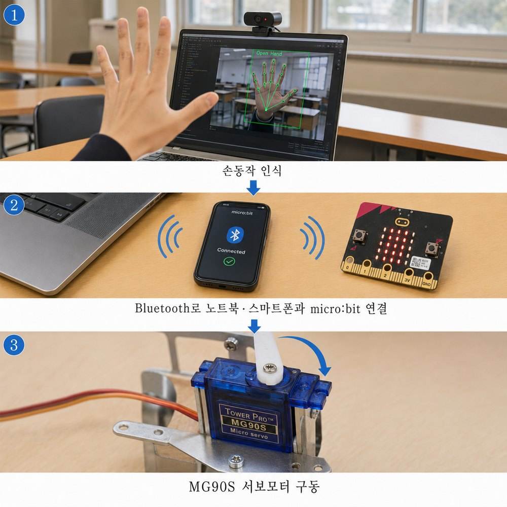

이 안에 무엇이
들어 있을까요?
들어 있을까요?
손을 알아보는 AI
구분
일반 AI
들어오는 것
글·그림·소리·데이터
카메라·마이크·거리·움직임
하는 일
만들기·분류·예측
알아보기·판단·제어
나오는 것
화면 속 정보
움직임·회전·빛·소리
틀리면
엉뚱한 답이 나온다
기계가 엉뚱하게 움직인다
틀리면 실제 장치가 잘못 움직여요. 그래서 피지컬 AI는 만들고, 움직이고, 고치기를 되풀이합니다.
① 인식
바운더리엑스 웹앱
카메라로 보고, 결과를 ID1 같은 글자로 보낸다
블루투스ID1
② 판단
마이크로비트
‘데이터가 ID1이면 move 1’을 정한다
오늘 코딩하는 곳
각도명령
③ 움직임
180° 서보 2개
move 1은 P0, move 2는 P1 서보를 움직인다
④ 확인(피드백): 움직인 결과를 보고 다시 판단하고 고친다
왜 이렇게 나눌까요?마이크로비트는 AI 계산을 하기 어렵고, AI를 직접 돌리는 보드는 비싸요.
그래서 AI는 손에 있는 기기(폰·태블릿·노트북)가 맡고, 마이크로비트는 판단과 움직임만 맡습니다.
그래서 AI는 손에 있는 기기(폰·태블릿·노트북)가 맡고, 마이크로비트는 판단과 움직임만 맡습니다.
1
A 버튼으로 0° 보내기
모터를 기준 위치에 둔다
2
혼을 기준 방향에 끼우기
예: 수평이 되도록
3
B 버튼으로 180° 확인
반대쪽 끝도 본다
4
나사로 고정
구조가 정해진 뒤에 조여도 된다

혼(암)
서보 축에 끼우는 날개
오늘은 한쪽만 있는 하프 혼을 씁니다.
오늘은 한쪽만 있는 하프 혼을 씁니다.
서보 축은 손으로 돌리지 않습니다.
혼과 나사는 작아서 잘 잃어버려요.
받자마자 봉투에 잘 보관하세요.
받자마자 봉투에 잘 보관하세요.
① 인식 · 바꿔 끼우기
핸드포즈 웹앱
손 모양을 보고 ID1·ID2를 보낸다
이미지분류 웹앱
손 모양 대신 물체를 보고 ID1·ID2를 보낸다
음성인식 웹앱
말을 듣고 명령어 표의 ID1·ID2를 보낸다
블루투스ID1
② 판단 · 그대로
마이크로비트
7차시 기본 코드, 다시 보내지 않는다
각도명령
③ 움직임 · 그대로
180° 서보 2개
move 1은 P0, move 2는 P1
판단하고 움직이는 부분을 한 번 만들어 두면, 보는 눈은 바꿔 끼울 수 있습니다.
웹앱이 바뀌면 블루투스만 다시 연결합니다.
① 말하기
“손 들어”
버튼을 꾹 누른 채 말한다
② 글자로 바꾸기
음성인식 모델
들은 말을 글자로 바꾼다
③ 명령어 표
손 들어 → ID1
등록한 말이 들어 있으면 짝지은 데이터를 보낸다
④ 마이크로비트
move 1
7차시 기본 코드 그대로
KNN 핸드포즈·이미지분류
우리가 예시를 모아 가르친다
손 모양·물체마다 예시를 모아 학습
음성인식
이미 배운 모델을 빌려 쓴다
우리는 ‘말 → 데이터’ 명령어 표만 만든다
말로 하면 좋은 때: 손이 바쁠 때, 멀리 있을 때, 손을 쓰기 어려울 때
① 인식
AI 웹앱 4종
핸드포즈 · 이미지
음성 · 모션
음성 · 모션
블루투스
② 판단
마이크로비트
기본 코드 · 모션 예제 코드
각도
③ 움직임
180° 서보 2개
P0와 P1
보낼 때움직일 때
보낼 땐 끄고, 움직일 땐 켠다
9~10차시에도 그대로입니다.
8차시 마무리

9~10차시로 가져갈 것
장비
마이크로비트·링비트·서보 2개와 내 장치 이름
아이디어 카드
문장 틀로 쓴 아이디어 한 장
9~10차시 「링비트와 AI모델을 활용한 문제해결 작품 제작 및 수업 적용」
오늘 만든 코드는 MakeCode에 저장해 두세요 · 10분 쉬고 뵙겠습니다